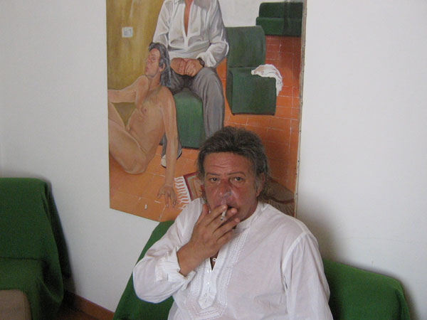

Pietro Lumachi
 Home
Home- Galleria
 Note Biografiche
Note Biografiche- Modalita' d'Acquisto
- Pietro Lumachi's Blog
- Links
Note Biografiche

Pietro Lumachi e un pittore figurativo italiano autodidatta. I suoi olii, di notevole successo, sono apprezzati da collezionisti di molte città europee e non solo, ha esposto, infatti, in personale, anche al Museo Nazionale di Belle Arti di Caracas su invito del ministero della Cultura Venezuelano (2006). Eleganza, mistero ed un cocktail di emozioni compongono i suoi lavori.
Lumachi, pur ammirando molti maestri contemporanei come Freud, Jennings, Vettriano, conserva la cultura e l'anima della sua terra non dimenticando i Grandi del Rinascimento e Barocco italiano: Lumachi è anche considerevole ritrattista. Vive e lavora sull' Appennino genovese.